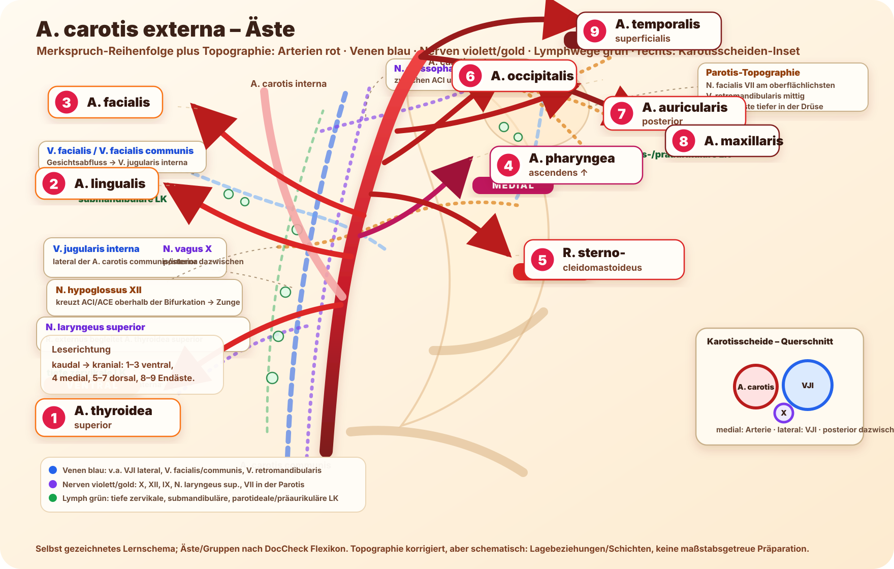

Haupt-Merkspruch inklusive Ramus SCM
„Theo leckt fröhlich; Pharao streichelt Opa am Ohr; Max tanzt.“
- Theo = A. thyroidea superior
- leckt = A. lingualis
- fröhlich = A. facialis
- Pharao = A. pharyngea ascendens
- streichelt = R. sternocleidomastoideus
- Opa = A. occipitalis
- Ohr = A. auricularis posterior
- Max = A. maxillaris
- tanzt = A. temporalis superficialis
Schema der Äste + topographischer Kontext
Selbst gezeichnetes Lernschema, damit keine fremde Abbildung kopiert werden muss. Die Nummern entsprechen dem Merkspruch oben. Zusätzlich sind wichtige Nachbarschaften dezent eingetragen: Venen blau, Nerven violett/gold, Lymphwege und Lymphknoten grün.

Topographische Orientierung im Schema
- Blau: V. jugularis interna liegt lateral der A. carotis communis/interna in der Karotisscheide; V. facialis/V. facialis communis drainiert zur VJI; V. retromandibularis liegt in der Parotisregion.
- Violett/Gold: N. vagus X liegt in der Karotisscheide posterior zwischen Arterie und VJI; N. hypoglossus XII kreuzt oberhalb der Bifurkation Richtung Zunge; N. glossopharyngeus IX zieht zwischen ACI und ACE zur Pharynxwand; R. externus des N. laryngeus superior begleitet die A. thyroidea superior; N. facialis VII liegt in der Parotis am oberflächlichsten.
- Grün: tiefe zervikale Lymphknoten entlang der V. jugularis interna, dazu submandibuläre und Parotis-/präaurikuläre Knoten als Drainage-Merker.
Wichtig: Das bleibt ein Lernschema, keine maßstabsgetreue Präparationszeichnung. Rechts ist deshalb ein kleines Karotisscheiden-Querschnitts-Inset ergänzt: medial Arterie, lateral VJI, posterior dazwischen N. vagus.
Wahrheitslayer
| # | Ast | Gruppe | Merkwort | High-yield Hinweis |
|---|---|---|---|---|
| 1 | A. thyroidea superior | ventral | Theo | zieht zum oberen Schilddrüsenpol; gibt u.a. A. laryngea superior ab. |
| 2 | A. lingualis | ventral | leckt | versorgt Zunge/Mundboden; passend: „leckt“. |
| 3 | A. facialis | ventral | fröhlich | Puls am Unterkieferrand vor dem M. masseter tastbar. |
| 4 | A. pharyngea ascendens | medial | Pharao | kleiner medialer Ast, steigt zur Pharynxwand/Schädelbasis auf. |
| 5 | R. sternocleidomastoideus | dorsal | streichelt | bei manchen Listen nicht als Hauptast gezählt; hier nach DocCheck aufgeführt. |
| 6 | A. occipitalis | dorsal | Opa | zieht zum Hinterhaupt [Occiput]. |
| 7 | A. auricularis posterior | dorsal | Ohr | zieht hinter das Ohr. |
| 8 | A. maxillaris | Endast | Max | tiefer Endast in die Fossa infratemporalis/pterygopalatina. |
| 9 | A. temporalis superficialis | Endast | tanzt | oberflächlicher Endast; Puls vor dem Ohr/Schläfenregion. |
Quelle / Genauigkeit
Äste und Gruppierung wurden gegen DocCheck Flexikon „Arteria carotis externa“ abgeglichen: ventrale Gruppe, mediale Gruppe, dorsale Gruppe und Endäste. Anatomische Varianten und Lehrbuchzählungen können abweichen, besonders beim Ramus sternocleidomastoideus.